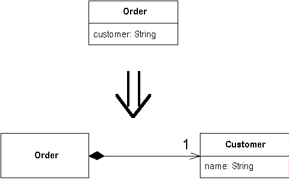

Replace Data Value with Object
You have a data item that needs additional data or behavior.
Turn the data item into an object.

For more information see page
175
of
Refactoring
| Refactoring Home |
| Alphabetical List |